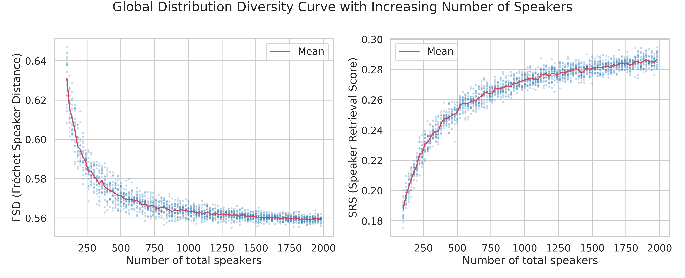
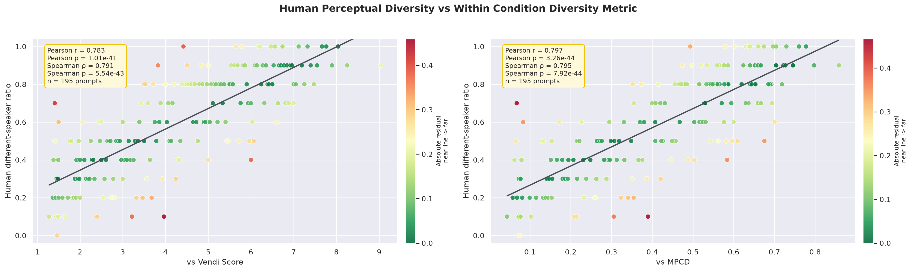
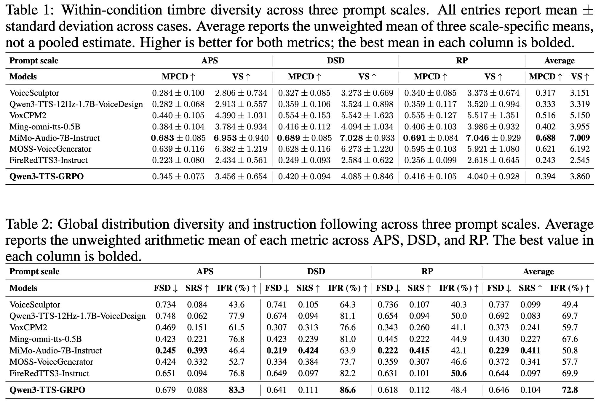
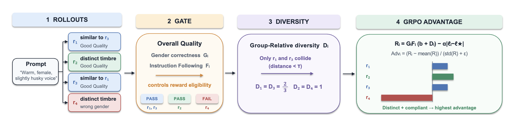

Research Project Page
One Prompt, Many Voices: Benchmarking and Improving Timbre Diversity in Instruction-Following Voice Design
01
Introduction
Voice design requires generating natural speech that adheres to textual descriptions while providing diverse timbre candidates for applications like character casting. Since natural language descriptions constrain perceptual attributes without dictating a unique speaker identity, multiple distinct voices can satisfy a single instruction. However, current research primarily emphasizes instruction following and overlooks timbre diversity, leaving the generation of diverse yet compliant voices underexplored. To address this gap, we introduce VoxDICE, a benchmark combining hierarchical voice descriptions and a real speech reference set to jointly assess instruction following, conditional timbre variation, and global speaker distribution alignment. Evaluations of current models on VoxDICE reveal a prevalent empirical tension between instruction-following and timbre diversity. To overcome this limitation, we propose a reinforcement learning approach based on group relative policy optimization. This method integrates a distinct timbre reward within generation groups alongside an instruction gate that restricts diversity bonuses to compliant candidates. Experiments on the Qwen3 TTS model demonstrate significant improvements in both timbre diversity and instruction following, establishing that these capabilities can be jointly enhanced.
02
Benchmark Results
Metric Validity


Open-Source Model Results
Comparison of current leading open-source voice design models on VoxDICE across within-condition timbre diversity, global distribution diversity, and instruction following.

03
Reinforcement Learning Training Comparison
Reinforcement Learning Training Pipeline
